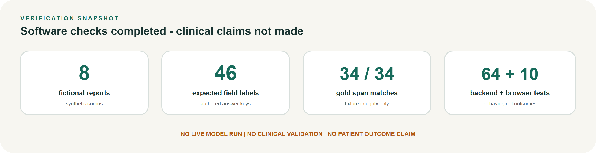

◉ Lumen
Prototype · English · text only
One-pager
27 October 2026
Leave-behind
A clearer conversation starts with understanding the report.
Lumen is a cautious, source-grounded prototype that explains cancer pathology-report wording and prepares neutral questions for a care team - without diagnosing, predicting outcomes, or recommending treatment.

What people get
- Plain-language statements tied to exact report quotes
- Missing fields marked “not stated,” never guessed
- Neutral questions for the appointment
- Clear refusals when a request goes beyond safe scope
For
Adults and caregivers preparing for a care-team visit after a cancer-related report.
Not for
Diagnosis, prognosis, treatment advice, dosing, trial eligibility, urgent triage, or clinical decision-making.
Guiding rule
Evidence before eloquence. An untraceable answer is a failure.

Disclosure: Synthetic-only prototype. Not medical advice. Not clinically validated. Not ready for patient use. Confirm every meaning with a clinician.